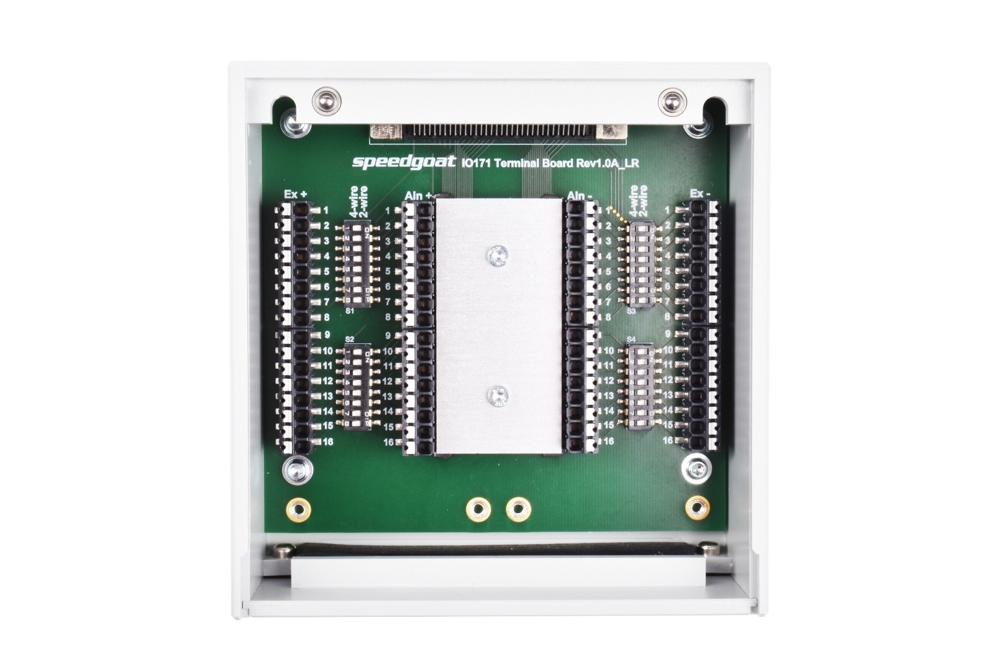
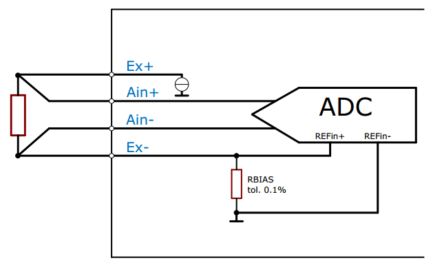
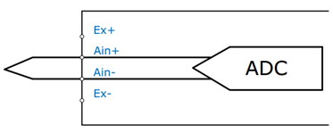
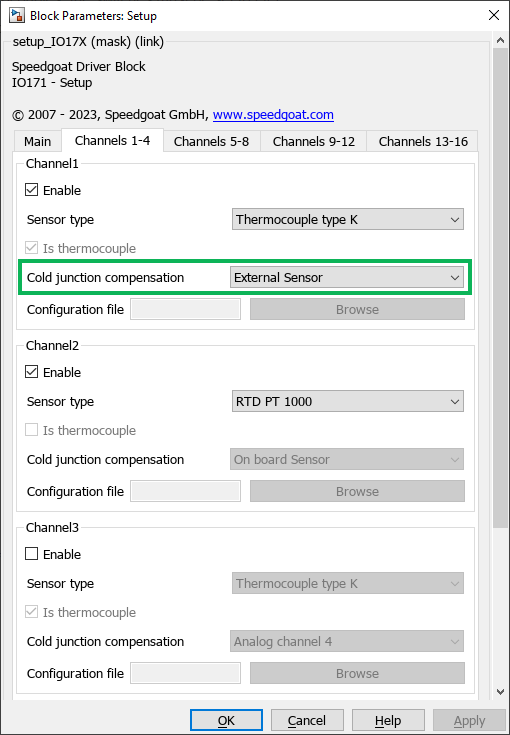
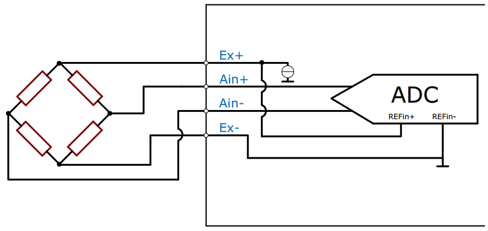
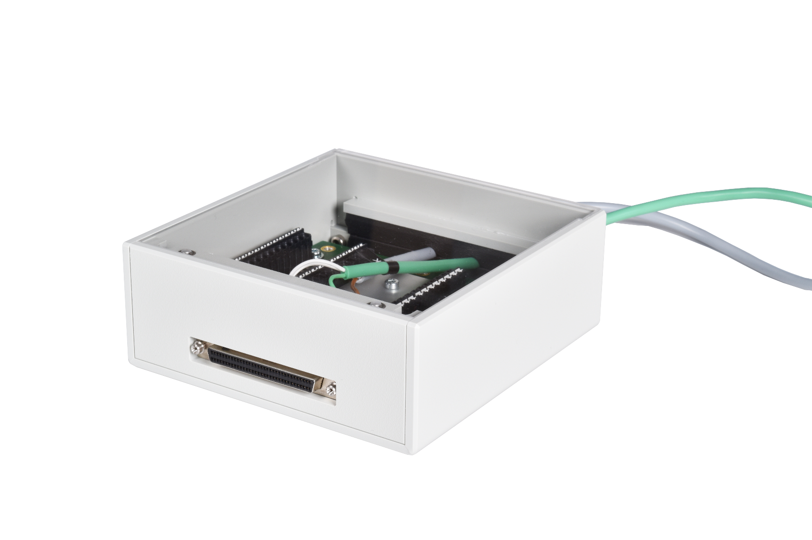
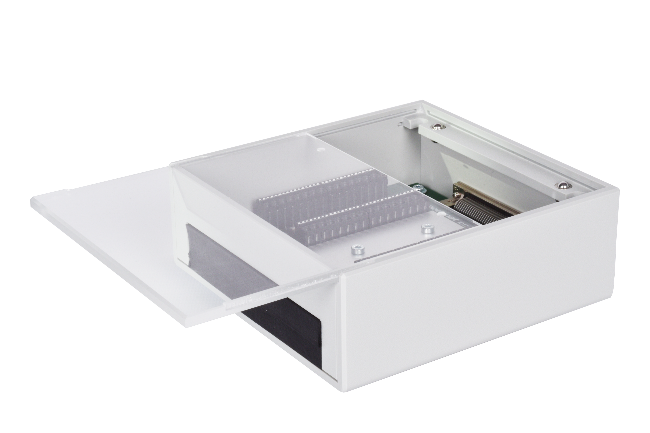
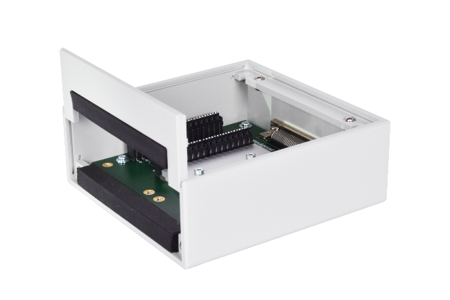

IO17x Terminal Boxes — Terminal boxes manual for the I/O modules
The Speedgoat IO17x Terminal Boxes are dedicated terminal boxes for RTDs, strain gauges and thermocouples (including cold junction compensation). They allow individual wiring schemes to be implemented for each channel.
Switches
Each channel has two switches which allow the excitation voltage to be directly connected to the sensor terminal (Ain+ & Ain-). Consequently, jumper wires are not needed for two-wire RTD measurements.
Cold Junction Compensation
The cold junction compensation for thermocouples is achieved by an isothermal block which thermally connects all sensor terminals (Ain+ and Ain-). The IO17x automatically measures the temperature of the aluminum block using an SE95 thermal sensor. The casing further helps to balance the temperature.
Labelling
The numbers on the connectors indicate the corresponding channels. The labels on top of the connectors indicate the function (Ex+, Ex-, Ain+, Ain-).

This section describes three connection configurations for three corresponding types of sensor.
The switches provide a choice between two configurations. In both cases the switch between EX+ and Ain+ must be in the same position as the one between Ex- and Ain- for the same channel.
The switch position (ON/OFF) is indicated on the switch itself.
Note For revisions 1.0A, 1.1A and 1.2.1, the "2-wire" and "4-wire" labels should be ignored. The switch position (ON/OFF) indicates the appropriate functionality for the schemes described below.
RTDs
The wiring scheme for RTDs is as follows:

Set the switches to ON when there are two wires running to the RTD. The connection of the excitation current to the RTD occurs directly on board. This option provides the least accuracy.
Set the switches to OFF when there are four wires running to the RTD. This option provides the best accuracy.
Thermocouples
Thermocouples are wired as follow:

Thermocouples do not require any external excitation. When connecting thermocouples, the switches must be set to OFF.
The Cold junction Compensation field in the IO17x Setup Simulink block must be set to External Sensor.

Strain Gauges
Strain gauges are usually measured with a quarter-bridge or a half-bridge configuration. Therefore, the switches must be set to OFF.

To achieve a thermally optimal measurement environment, cables are run outside the IO17x Terminal Boxes through a slit using insulating foam. This solution reduces thermal exchanges between the inside and outside of the IO17x Terminal Boxes.

Remove the transparent lid and front wall as shown below.


After connecting the sensor cables, re-insert the front wall completely and slide the lid back on.
To connect the IO171 Terminal Box to a Speedgoat real-time target machine, use the 68-way MDR-SCSI cable provided. To connect the IO172 Terminal Box, use the two 17-pin M12 cables provided.